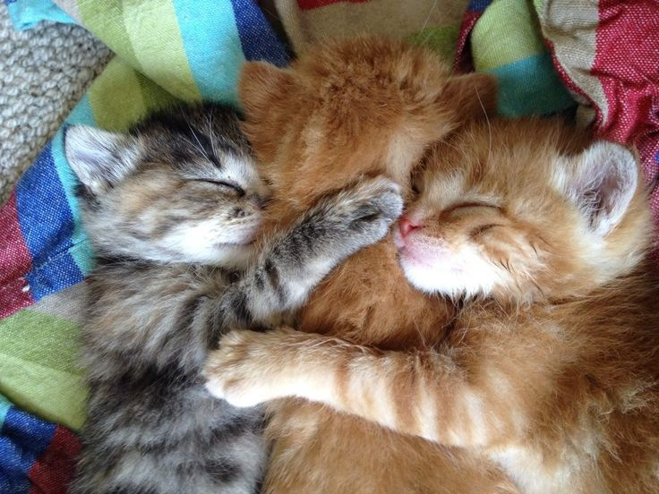
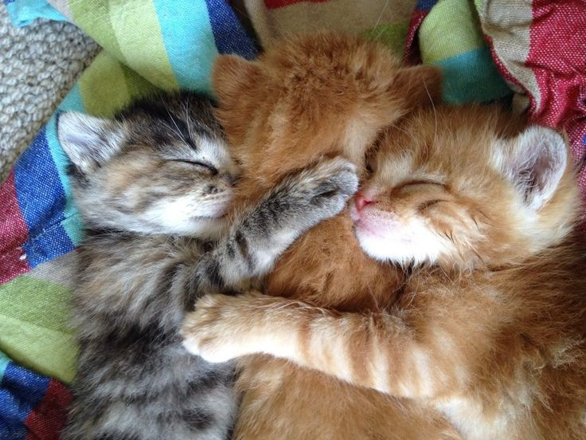

Growing up, I was a dog person because of how fun they were. As I got older (and my cousin got a kitten), I was very convinced that cats suited my lifestyle and personality more. I love how cats get extremely cuddly at times, but other times need alone space. I admire cats because they have firm boundaries, and they move through their lives without a care. A great example is my cat: I tell him to get off the counters, but he never does. He's too cute, so I forgive him immediately. To the left, is a picture of him. To the right, it's a picture of a random cat.
 

| Breed | Personality |
|---|---|
| Ragdoll | Affectionate and calm |
| Siamese Cat | Social and strong |
| British Shorthair | Gentle and quiet |
About Me | My Hobbies | My Dream Life | My Christmas Wishlist